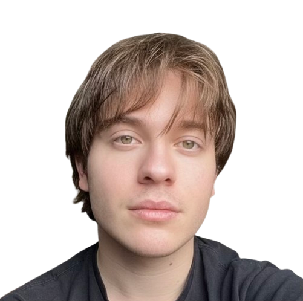

Routr
Next.js · TypeScript · Duffel API · Upstash Redis · Vercel

avatarSoftware Engineering Student
SDU Sønderborg · Physics @ UNED
About
Building software at the intersection of engineering and real-world problems. Studying Software Engineering at SDU (Denmark) and Physics at UNED (Spain) simultaneously.
Projects
Routr
Next.js · TypeScript · Duffel API · Upstash Redis · Vercel
DialysisX
TypeScript · Node.js · React · WebSocket
Strikepool
TypeScript · Next.js · Supabase · Tailwind
Happinest
Laravel · PHP · MySQL · Blade
DeskUp
Laravel · PHP · MQTT · Tailwind
HPO Analyzer
C# · Avalonia · .NET